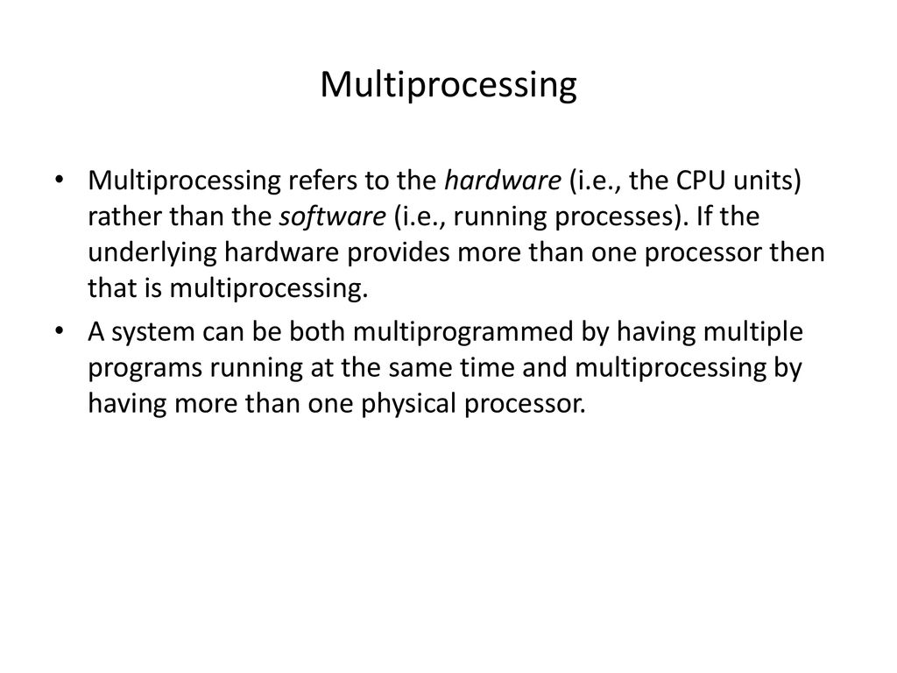

01
What is an operating system ?
An operating system (OS) is system software that manages computer hardware and software resources, and provides common services for computer programs.
Read moreExamples of Operating Systems :

-
Linux :
Linux is a family of open-source Unix-like operating systems based on the Linux kernel, an operating system kernel first released on September 17, 1991, by Linus Torvalds.
-
Windows :
Windows is a group of several proprietary graphical operating system families developed and marketed by Microsoft. Each family caters to a certain sector of the computing industry. For example, Windows NT for consumers, Windows Server for servers, and Windows IoT for embedded systems.
-
iOS :
iOS is a mobile operating system developed by Apple Inc. exclusively for its hardware. It is the operating system that powers many of the company's mobile devices, including the iPhone;
-
Android :
Android is a mobile operating system based on a modified version of the Linux kernel and other open-source software, designed primarily for touchscreen mobile devices such as smartphones and tablets.
- Other OS ...
Answer the Questions !
-
What does OS stands for ?
-
Who released the first operating system kernel ?
-
Which of these OS is based on a modified version of Linux ?
-
What OS does the iPhone use ?
-
Which company did developed Windows ?
-
What operating system did Linus Torvalds helped developing ?
-
Is the OS a hardware that can be found in different devices ? (y/n)
02
Hardwares and essential components
We mentionned earlier that the Operating System (OS) is system software that manages computer hardware , so what are these hardwares ? We are gonna take cover and learn about some of the essential hardware , and we will talk about them more in the next parts of the course.
Different devices (Phones , Computers , Smart Watches etc..) are programmed to do a certain job , and they rquire hardwares that function together following different algorithms and stages (We will talk deeply about them later) and each hardware have its own purpose and rules ...
Examples of essential hardwares :
-
RAM :
What Is RAM? RAM is a common computing acronym that stands for random-access memory. Sometimes it's called PC memory or just memory. In essence, RAM is your computer or laptop's short-term memory. It's where the data is stored that your computer processor needs to run your applications and open your files.

-
CPU :
The Central Processing Unit (CPU) is the primary component of a computer that acts as its “control center.” The CPU, also referred to as the “central” or “main” processor, is a complex set of electronic circuitry that runs the machine's operating system and apps.
-
HDD :
A computer hard drive (or a hard disk or HDD) is one kind of technology that stores the operating system, applications, and data files such a documents, pictures and music that your computer uses. The rest of the components in your computer work together to show you the applications and files stored on your hard drive.

-
GPU :
The graphics processing unit (GPU) in your device helps handle graphics-related work like graphics, effects, and videos. Learn about the different types of GPUs and find the one that meets your needs. Integrated GPUs are built into your PC's motherboard, allowing laptops to be thin, lightweight, and power-efficient.

-
Mother Board :
The motherboard is the backbone that ties the computer's components together at one spot and allows them to talk to each other. Without it, none of the computer pieces, such as the CPU, GPU, or hard drive, could interact. Total motherboard functionality is necessary for a computer to work well.
-
There are more hardwares like keyboards , screen , mouses etc... But we only need RAM , CPU and HDD in this course , if you feel curious about the others , then i recommend you to go search and explore on your own !
Answer the Questions !
-
What does HDD stands for ?
-
Does RAM stands for random active memory ? (y/n)
-
What does RAM stands for ?
-
What does the CPU stands for ?
-
What hardware is mostly used for graphics ?
-
What hardware is responsible for connecting them all ?
-
The Hard Disk is considered as the main memory ? (y/n)
-
Can we run a computer without a RAM ? (y/n)
-
CPU is considered as the mind of a computer ?(y/n)
03
Program VS Process
First of all , let's define each one so we can know the difference between a Program and a Process
What is a program ?
A program is an executable file which contains a certain set of instructions (code) written to complete a specific job on the device. It's considered as a passive entity.
What is a process ?
A process is a " running program " that serves as the foundation for all computations. It's considered as an active entity.
Answer the Questions !
-
Which one is a dynamic object ?
-
Which one goes to the RAM ?
-
Which one is an executable file ?
-
The program is a set of instructions execution in machine code ? (y/n)
-
Does the process have unlimited life span ? (y/n)
04
States of Process
We mentioned before the difference between a Process and a Program and now we are gonna cover the states of a process when it's runninng
The process have 7 states in total , and he minimum number of states is five.
The names of the states are not standardized although the process may be in one of the following states during execution.
-
New State :
New process is being created in the Hard Disk (copy of the executed program) .
-
Ready State :
Process is moved (sent) to the RAM but still not performing (not runninng) .
-
Running State :
The process is executeed by the CPU and is running .
-
Waiting State (I/O) :
Process is waiting for a resource (or a user input) to finish it's job , Process is undergoing (block).
-
Terminated State :
Process finished executing (running) and is waiting to be removed from the main memory (RAM) .
-
Suspended Ready State :
The process is brought to its ready state when the main memory becomes accessible (from the hard disk) .
-
Suspended Wait State :
A process moves from wait state to suspend wait state if a process with higher priority has to be executed but the main memory is full. Moving a process with lower priority from wait state to suspend wait state creates a room for higher priority process in the ready state.
Answer the questions !
-
How many states does the process have ?
-
What state id process when working in the CPU ?
-
In what state a copy of the program is created ?
-
In new state where does the copy of prgram (process) is located ?
-
In which state we find the process undergoing ?
-
In which state the process gets removed from the main memory (RAM)?
-
In what state the process is running in the CPU ?
-
In the suspended wait state , the process is sent back to the Hard Disk ? (y/n)
05
Multiprogramming , Multiprocessing , Multithreading and Multitasking
What's Multiprogramming ?
Multiprogramming means interleaved execution of several tasks on the same computer system. One of the major aims of multiprogramming is to manage the various resources of the entire system
Degree of Multiprogramming ?
In other words , it also means the maximum number of processes which can be present (stored) in the RAM and can be accomodated efficiently by a single processor system
What's Multiprocessing ?
multiprocessing runs multiple processes simultaneously on multiple processors, unlike Multiprogramming.
What is Multithreading ?
What is Multitasking ?
Answer the questions !
-
Which one keeps several processes in main memory at the same time and execute them one by one ?
-
In which one the process takes only a fair quantum of the CPU time ?
-
Which one is similar to Multiprocessing ?
-
The degree of Multiprogramming refers to the maximum processes which can be present in CPU ? (y/n)
-
Do you understand the difference between each one ? (y/n)
06
Types of Operating Systems
We are only going to mention 3 types of OS in this lecture.
Batch OS :
We can only put one process in the RAM , which means we can only execute one by one process (we can execute multiple tasks if the jobs require the same resources) .
Multiprogramming OS :
We can have more than one process in the RAM
Multiprocessing OS :
It is parallel processing which means we have more than one cpu (hardware) .
Answer the questions!
-
In which OS the RAM can only hold one process ?
-
Which type of OS is in use today ?
-
Which OS allows us to execute one by one process and store many process in RAM ?
07
PCB , attributes of process and Context of process
What is PCB ?
Process Control Block is a data structure that contains information of the process related to it. The process control block is also known as a task control block, entry of the process table, etc. It is very important for process management as the data structuring for processes is done in terms of the PCB.
Attributes of process :
What is a context ?
In computer science, a task context is the minimal set of data used by a task that must be saved to allow a task to be interrupted, and later continued from the same point.
The context of a process includes its address space, stack space, virtual address space, register set image (e.g. Program Counter (PC), Stack Pointer (SP), Instruction Register (IR), Program Status Word (PSW) and other general processor registers), updating profiling or accounting information, making a snapshot image ...
Sounds like too much information ? Dont worry i just mentioned them and you can either ignore them or just at least know them .
We will talk about Context Switching & Context Swapping !
Context Switching :
context switch is the process of storing the state of a process or thread, so that it can be restored and resume execution at a later point, and then restoring a different, previously saved, state. And it happens between RAM and CPU .
Context Swapping :
Context Switching involves storing the context or state of a process so that it can be reloaded when required and execution can be resumed from the same point as earlier. This is a feature of a multitasking operating system and allows a single CPU to be shared by multiple processes.And it happens between RAM and HDD .
Answer the questions !
-
What does PCB stands for ?
-
In which attribute of process we know it's state ?
-
Which context is a bond between RAM and CPU ?
-
In which attribute of process the the content of all process-ceentric registers ?
-
Which context is considered a feature of a multitasking operating system ?
-
How many states does the process have ?
08
Types of Scheduling
What is Long-Term, Short-Term, and Medium-Term Scheduler?
Long Term Scheduler :
Long-term scheduling is performed when a new process is created. This is a decision whether to add a new process to the set of processes that are currently active.Happens between RAM and HDD.
Short Term Scheduler :
Short-term scheduling involves selecting one of the processes from the ready queue and scheduling them for execution. This is done by the short-term scheduler. A scheduling algorithm is used to decide which process will be scheduled for execution next by the short-term scheduler.Happens between RAM and CPU.
Medium Term Scheduler :
Medium-term scheduling is a part of the swapping function. This is a decision whether to add a process to those that are at least partially in main memory and therefore available for execution. Short-term scheduling is the actual decision of which ready process to execute next.Also between RAM and HDD.
Answer the questions !
-
Which scheduler make the decision of which ready process to execute next?
-
Which scheduler is performed when a new process is created?
-
The long term scheduler is between RAM and CPU ? (y/n)
-
Is the long term scheduler a part of the swapping function ? (y/n)
-
What process is a part of the swapping function ?
09
Various times of Process
In Operating System, various times related to process are :
-
Arrival time :
Its the time when the process have entered the RAM .
-
Waiting time :
Duration of the time spent by the CPU executing the process .
-
Response time :
Duration of time spent by the process in ready state (When it entered RAM for the first time only ) .
-
Burst time :
Also called execution time , its the duration
-
Completion time :
Point in time on which the process completed executing .
-
Turn Around Time :
The duration of time that the process to from start to end (from new state to terminated state) .
Answer the questions !
-
Do you promise that you will memorise them by heart ? i can't find any questions , they are easy to learn and if u dont learn them you are just stupid . (y/n)
10
CPU Scheduling and Algorithms
We will cover 2 types of CPU scheduling algorithms in OS :
Pre-emptive VS Non pre-emptive !
This room was created by 4n7h4r4x in Wed Mar 22 01:18:22 AM CET 2023 Hope you enjoyed my first ever room and learned something new !